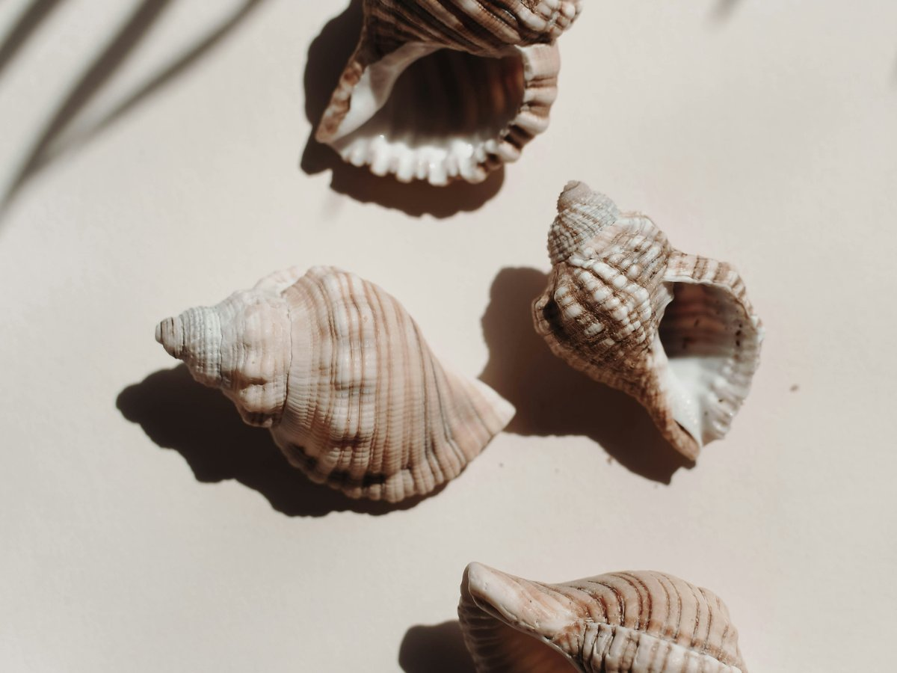

← Toutes les recettes
Bigorneaux
Cuits à l'eau bien salée aux herbes, se dégustent nature avec un filet de citron.

Ingrédients
- Bigorneaux1 kg
- Eau (pour couvrir)1,5 l environ
- Gros sel40 g / litre
- Feuille de laurier1
- Thym fraisquelques branches
- Poivre en grains1 c. à café
- Citron, en quartiers1
Étapes
- Rincer les bigorneaux à l'eau claire, plusieurs fois, pour enlever le sable.
- Porter l'eau à ébullition avec le sel, le laurier, le thym et le poivre.
- Plonger les bigorneaux dans l'eau bouillante. Compter 5 à 8 minutes de cuisson à partir de la reprise de l'ébullition.
- Égoutter et laisser refroidir dans l'eau de cuisson plutôt qu'à l'air libre, pour qu'ils restent bien salés à cœur.
- Servir avec une épingle ou un pique en bois pour extraire la chair en tournant délicatement dans le sens de la coquille. Nature, avec un filet de citron et du pain beurré ou du pain de seigle.
Ne pas dépasser 8 minutes de cuisson, la chair devient vite caoutchouteuse. Se dégustent bien en ouverture, avant des huîtres par exemple.